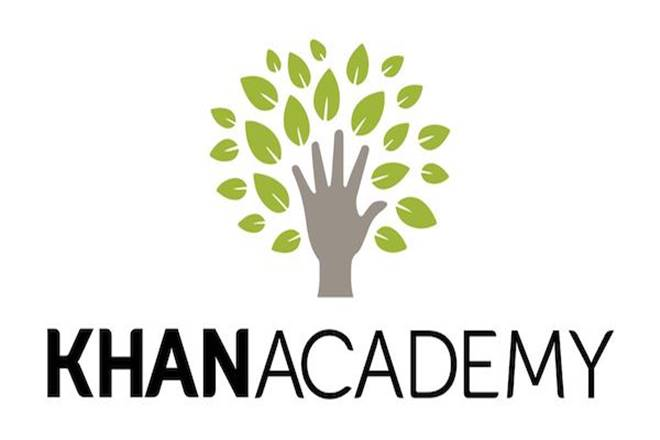

Resources
home
topics
productive
resources
General Lessons & Lectures
Take a look at these online academics that provide free lessons and lectures for a variety of subjects


Note Taking
Student Guide to Effective Note Taking
How to Take Notes Effectively: Powerful Note-Taking Techniques
Study Hacks
Study Tips
Study Hacks
How to Study
Healthy Foods
Study Snacks